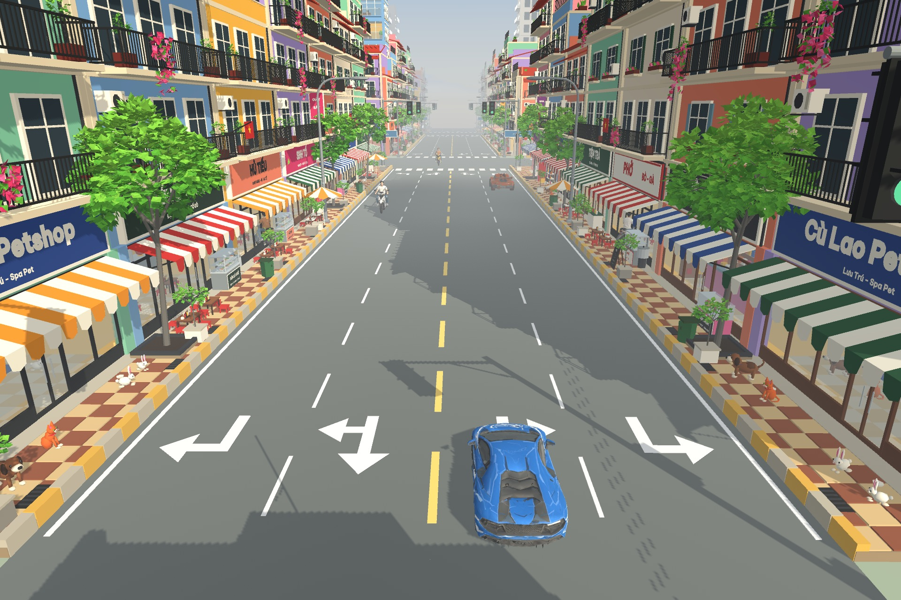

MỘT VÒNG VIỆT NAM
Phố quen.
Chuyến đi mới.
Cầm lái xe đua xanh, lướt qua phố Việt trong sương sớm. Né dòng xe, bật nhảy và thử phá kỷ lục của bạn.
Chơi miễn phí · Máy tính & điện thoại
← → / A DĐổi làn / rẽSPACENhảyWTăng tốcQHúc ngangPTạm dừng
Vuốt ngang để đổi làn / rẽ, vuốt lên để nhảy, vuốt xuống để tăng tốc. Chạm hai lần để húc ngang.
